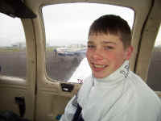

"Visual with the unknown"....Allan
Hanbury to Cardiff
Radar.
Saturday 4th
January
Trip Planned : Cardiff
- Newport
Passenger : Tiffany
Hanbury
Departure Atis : 060/04 VRB 330/070 Vis 20km
Few 018
Arrival Atis : As Departure
Duration : 40 minutes
SUMMARY
Today's flight was to be (another) short
local flight so my little niece to see her house and Newport from the air.
Very little wind and the visibility towards the North East was fairly good.
Tiffany didn't stop talking all the time we were airborne even though I told her
a number of times not to speak while I was talking on the radio, she enjoyed the
view of Newport and her house and so we headed back to Cardiff into the sun.
Tiffany was still talking my head off and when she was not talking she decided
it would be a good time to start singing. I did the only decent thing and
unplugged her headphones.
Cleared Cardiff Docks Arrival and final number 3. I had trouble spotting number
2 due to the sun in my eyes and the fact that he decided to turn his circuit
into a mini cross-country. Asked ATC to clarify his position and I spotted him
heading towards St Hilary for an approach that a 747 would have been proud of.
Followed him in and made a very good approach and landing.
Brakes Off 14:25 - Brakes On 15:05.

Saturday
25th January
Trip Planned : Cardiff
- Newport
Passenger : Chris Barber
Departure Atis : 270/12 Vis 20km Few 020
Arrival Atis : As Departure
Duration : 20 minutes
SUMMARYI did not have a passenger lined up for
todays trip but I needed to fly to retain currency and planned on a few circuits
to practice my landings some more. There was a guy stood watching the planes
take off and he said he was waiting for his brother who was on a trial lesson so
I asked him if he fancied doing a few circuits with me. I explained what a
circuit was and he jumped at the chance. So off we went and I did 2 routine
circuits with 2 pretty impressive landings.
Brakes Off 12:55 - Brakes On 13:15.
Monday 10th
February
Trip Planned : Cardiff
- Newport
Passenger : Mathew
Pitman
Departure Atis : 160/10 Vis 12km Few 020 -SHRA
Arrival Atis : As Departure
Duration : 15 minutes
SUMMARY
My intentions to have a flight around South Wales
finest sceneryMy
passenger was quite nervous so I tried to keep it as smooth as possible. I completed a
circuit and I intended to do a few more but my passenger got a little frightened
and the wind speed seemed a lot more that the 10 knots that were given. As we
were on the approach I asked him if he wanted to continue and do a few more
circuits but he declined so we landed after 1.
Brakes Off 15:25 - Brakes On 15:40.
Wednesday
19th March
Trip Planned : Club Checkout
Instructor : Christine Draycott
Departure Atis : 110/04 Vis 6km SKC
Arrival Atis : As Departure
Duration : 50 minutes
SUMMARY
I have not flown for over 5 weeks due to a combination of
bad weather and work. It seemed that everytime I had a day off work to go flying
the weather had other ideas, so I needed a club checkflight with an instructor
to see if I still knew how to fly.
It was quite a painless procedure and involved 5 circuits. I began with a
practice engine failure after takeoff which I performed well followed by two
normal circuits which were ok except I landed a little flat on the first one,
then I did two flapless approaches in which I was a little high on both but
corrected OK. I then finished off with a glide approach which went well. So not
a bad bit of flying after a 5 week grounding and I had a 'satisfactory' remark
from the instructor.
I hope to do a lot more flying this year and INTEND to do a landaway once a
month to make up for all the local and circuit flying I have been doing for the
past 18 months.
Brakes Off 13:50 - Brakes On 14:40.
Saturday 12th
April
Trip Planned : Cardiff
- Newport
Passenger : David Morgan
Departure Atis : 110/12 Vis 8km
Arrival Atis : As Departure
Duration : 35 minutes
SUMMARY
The weather was quite hazy
today, so once again my planned trip to Swansea turned into a local trip to
Newport and back. Another very routine flight, apart from the haze, although
even routine flights are enjoyable and my passenger loved the experience.
Cleared Cardiff Docks arrival and final number one. I turned onto final a little
later than I wanted and found myself correcting all the way to touchdown.
Finished with a pretty good landing.
Brakes Off 14:05 - Brakes On 14:40.
Tuesday 6th May
Trip Planned : Cardiff
- Swansea Airport
Passenger : Solo
Departure Atis : 280/14 Vis 23km Sct 025
Arrival Atis : 260/18
Duration : 35 minutes
SUMMARY
Was today the day that I finally
get to go to another airport???.
The weather looked excellent so I hoped it would be. I got to the airport and
the only slight concern was the wind at Swansea which was reported at 260/20. I
decided to go and if it was too gusty I could always return to Cardiff's
mega-huge runway. Pre-flighted the plane, but forgot to book out so I had to
walk back to the club to do that and while I was there I checked the ATIS once
more which had not changed.
Took off and headed towards Swansea. As I had not flown there for nearly 2 years
I was a little nervous and studied the runway layout. Pretty routine 20 minute
flight over the beautiful Gower, although a tad bumpy nothing of concern. Called
up Swansea and was given a straight in approach to runway 28 and asked to report
4 mile final. I had no problems finding the airport, and calling 4 mile final
was easy thanks to my little friend called GPS. I was then asked to report 2
mile final, which I did, although I called it at 2.1 miles I don't think they
noticed in the tower. :-) It was as I began descending that things got a little
rough. I was being buffeted about all over the place and as I got below 500ft on
the approach things started to get interesting and it was all hands (and feet)
to the pump. I crossed the threshold a little fast but managed to do a 'fair'
landing. Taxied towards the club and a little voice from the tower piped up
'Turn to the right and park next to the other light aircraft'. My reply of 'Righty
O' would not have won me any RT awards. Parked up and shut down.
I then strolled amongst the heavy machinery which was laying tarmac to pay my £4.50
landing fee. I then bought a can of coke for 80p....HOW MUCH....and sat in the
cafe feeling quite pleased with myself for no reason at all other than I can fly
a plane........
Brakes Off 15:50 - Brakes On 16:25.
Tuesday 6th May
Trip Planned : Swansea Airport - Cardiff
Passenger : Solo
Departure Atis : 260/18
Arrival Atis : 260/12 Vis 25km Few 025
Duration : 30 minutes
SUMMARY
Called for taxy and was
instructed to report at holding point Juliet.
EEK. Couldn't find Juliet on my airport plan so asked tower for directions, they
guided me to Juliet and cleared me to backtrack 28 and take off. Full power and
off I was back into the blustery air. I climbed to 1000 ft straight out and then
began my turn towards Cardiff.
Reported to Cardiff Approach when I reached Port Talbot and flew a standard
arrival via St Hilary. The wind seemed a lot more than the reported 12 knots and
as I descended to circuit height of 800ft I was being blown all over the place.
Flew a decent circuit and cleared number 1 to land, which was a surprise as I
expected it to be busy. My approach was good and I smoothly touched down on the
numbers.
Brakes Off 16:40 - Brakes On 17:10.
Monday 2nd June
Trip Planned : Circuits
Passenger : Solo
Departure Atis : 260/14 Cavok
Arrival Atis : As Departure
Duration : 25 minutes
SUMMARY
To retain currency I performed 2 routine circuits in clear
skies. A bit bumpy but nothing else to report.
Brakes Off 16:40 - Brakes On 16:00.
Thursday 12th
June
Trip Planned : Cardiff -
Gloucester Airport
Passenger : Dean
Hanbury
Departure Atis : 270/13 Vis 35km Few 020 Sct
030
Arrival Atis : 230/11 Vis 50km Few 025 Sct 030
Duration : 45 minutes
SUMMARY
The weather looked good enough
today for my long awaited trip to Gloucester Airport, courtesy of my free
landing voucher from Flyer magazine. We were delayed for about 30 minutes trying
to find someone to refuel the plane. Full of fuel we were off and I decided to
give my friend the GPS another outing using the direct route to Gloucester. A
little bumpy take-off and quite turbulent for a few minutes but it soon became
clear after I climbed to 3,000ft. A very pleasant flight with no problems except
that I had the wrong frequency for Gloucester and called Bristol by mistake, who
quickly pointed out to me that Gloucester had now changed to there old
frequency. Ooops.
Asked by Gloucester to report field in sight and given joining instructions of
right hand for runway 22. Flew a pretty good circuit and finished off with a
spectacular landing that even my passenger congratulated me on.
Got a little confused with the parking spot and asked the tower to give my
directions which they duly did. A very nice flight in excellent weather which is
what flying is all about.
Brakes Off 13:15 - Brakes On 14:00.
Thursday 12th June
Trip Planned : Gloucester Airport - Cardiff
Passenger : Dean
Hanbury
Departure Atis : 240/12 Vis 50km Few 020 Sct
027
Arrival Atis : 290/15 Vis 35km Sct 030
Duration : 50 minutes
SUMMARY
After a quick can of coke and a
packet of crisps we climbed back into the trusty steed for our return journey to
Cardiff. Once more I got a little confused finding the hold and asked for
instructions and cannot fault the controller who guided me along like a little
lost puppy to the holding point. Had to wait for 10 minutes for landing traffic
but were soon back up into the air and on track to Cardiff....Courtesy of
GPS>GOTO :-)
I let Dean have a go at map crawling and he had our position pinpointed at all
times. A nice quite trip back to Cardiff with nothing much to report except
perfect weather and the skies to ourselves.
Called Cardiff and was given Cardiff Docks Arrival and right base number 1
for runway 30.
I made another perfect landing which my passenger congratulated me on once more.
Brakes Off 14:25 - Brakes On 15:15.
Tuesday 8th July
Trip Planned : Cardiff
- Circuits
Passenger : Solo
Departure Atis : 290/11 Vis 9km Few 010 Sct
012 Bkn 020
Arrival Atis : As Departure
Duration : 20 minutes
SUMMARY
I went to the airport today to
do a quick local flight to keep current but the weather was awful. Given a
cloudbase of 600ft which was not even good enough for me to do a few circuits.
I waited for a hour to see if things would improve and the next ATIS gave a
cloudbase of 1,000ft so I decided to do a few circuits. Flew 2 circuits in
deteriorating weather so decided to call it a day and land.
Not the best of flights but all part of the experience.
Brakes Off 16:00 - Brakes On 16:20.
Saturday 12th
July
Trip Planned : Cardiff
- Navigation Exercise
Passenger : Solo
Departure Atis : 140/05 VAR 110/210 Vis
18km Few 016
Arrival Atis : Forgot To collect (OOPS)
Duration : 1 hour 10 minutes
SUMMARY
I decided to try a bit of a
navigation exercise to see if I still knew how to do it.
Planned my trip as if I were a student and decided to fly from CARDIFF -
CHEPSTOW - ROSS ON WYE - ABERGAVENNY - CWMBRAN - CARDIFF.
As I was arrived at the airport I was told there would be a twenty minute delay
because the Red Arrows
were practicing. We were given a stunning display which was very impressive.
After they had finished I took off for my little exercise and the first leg to
Chepstow was spot on. I tuned into Filton for a FIS and was very surprised that
I was the only one on frequency considering the perfect weather and the fact
that it was a Saturday. Turned towards Ross-On-Wye and once again it was near
prefect.
Heading towards Abergavenny I decided to tune into 121.5 for a practice pan and
was most impressed with how quickly they gave my position, in fact they gave me
it before I told the I was 'unsure of my postion'.
It was now getting quite turbulent near Abergavenny and I was being bounced
about a bit so I decided to climb to 3,500ft to see if it was any smoother.
Turned towards my final point which was Cwmbran and once more my navigation and
ETA's were spot on. I might be able to fly this thing accurately without my GPS
after all :-)
Back to Cardiff I went and once more was given the Cardiff Docks Arrival and
cleared number 2 for runway 30. I was told to follow a jet (can't remember which
type) and given the minimum spacing of 4 miles, as I was a little close for my
comfort zone I 'asked' the tower for permission to orbit for spacing which was
granted. Turned on final and continued the approach, meanwhile the controller
had sneaked another aircraft onto the runway while I orbited for spacing.I was
virtually over the threshold before given permission to land due to the
departing light aircraft.
Shut down and walked back to the flying club pretty pleased with my little
navigation exercise.
Brakes Off 12:50 - Brakes On 14:00.
Tuesday 15th
July
Trip Planned : Club Checkout & Bi-ennial
Flight Review
Instructor : Richard Davies
Departure Atis : 120/08 Cavok
Arrival Atis : As Departure
Duration : 1 hour
SUMMARY
I needed to complete my 1 hour instructional flight as
part of my bi-ennial flight review so I decided to incorporate it with a club
checkout on the Warrior.
It was baking hot today with temperatures of 31 degrees so I was not looking
forward to the flight.
Met my instructor for the first time and he gave me some idea of what to expect
on the flight which was some stalls, a few steep turns a PFL and a couple of
circuits to finish.
I checked the warrior out while he re-fuelled. The warrior has a slightly
different layout to the Tomahawk and it took me a few minutes to find out where
everything was. We took off and headed to the practice area. I was amazed at how
smooth the plane handled and was very impressed with it. It trimmed really well
and takes all the effort out of the controls.
We reached 4,000ft and the practice area and then Richard demonstrated a stall
to me. I did the HASSELL checks and tried a stall which I performed adequately.
Next came steep turns which went OK except I kept losing a bit of height,
nothing alarming though and the instructor seemed happy enough.
I then did a practice forced landing and as the Warrior was a dream to trim I
was able to make small adjustments to the forced landing circuit and got lined
up with my chosen field quite easily, although I was a little high I managed to
slip it in without too much trouble so the instructor said he was happy and to
head back to the airport for a few circuits.
The first circuit was flown normally and you really need to pull back in the
flare, this caught me out a bit and I made a bumpy landing so it was off around
again for a flapless approach. I got the speed nailed and flew a pretty good
approach and rounded it off with a superb landing which had my instructor
patting me on the back. The final circuit was to be a glide approach to land. I
cut power on base and trimmed the aircraft for 70 knots, became a little high so
entered two stages of flap, I was still high so entered the final stage and
slipped it in to a fairly good landing. The instructor was happy with my flying
and so we taxyed back to the flying club where he signed my logbook. He then
warned me about the importance of weight and balance in a four seater aircraft
and the c of g. I was quite pleased with my flying and enjoyed the hour and the
chance to fly a bigger and more stable aircraft. The only downside of the day
was the fact that I could not find an examiner to sign my licence and must
ensure I get it sorted out before my anniversary which is on the 28th July.
P.S. Went down the airport on Sunday 20th July and got my licence signed
by Peter Mathews.
Brakes Off 16:40 - Brakes On 16:00.
Monday 28th July
Trip Planned : Cardiff
- Circuits
Passengers : Jennifer Hanbury - Hayley Hanbury
- Tim Jennings
Departure Atis : 210/12 Vis 15km Few 015 Sct
020
Arrival Atis : As Departure
Duration : 15 minutes
SUMMARY
Todays flight was to be a jolly for my wife, daughter
and her friend to experience a four seater aircraft.
The weather did not look too promising but we drove to the airport and hoped for
the best. When we got there the winds and clouds concerned me a little. It was a
12 knots crosswind, but I decided it would be fine for a few circuits and so we
all climbed into the comfortable 4 seater.
I taxyed to the holding point and performed my power checks and we were ready
for the off. I took off and immediately felt the effects of the wind which
seemed a LOT stronger than the 12 knots given. I decided to just do the single
circuit because I wasn't too happy and didn't want to scare my passengers :-). I
had to orbit while a 737 took off and we then encountered a rain shower. Called
final and ATC warned me that the winds were now gusting to 21 knots straight
across the runway. I kept my speed up and was prepared for the go-around at the
first sign of anything untoward. We came over the threshold and my approach
looked good so I continued on down, finally touched down but had a struggle to
keep it straight on the runway. It turned out fine and I taxied back to the
flying club with a little more experience under my belt.
Brakes Off 16:20 - Brakes On 16:35.
Sunday 3rd
August
Trip Planned : Cardiff
- Severn Bridge
Passengers : Hayley Hanbury
- Jessica Moynihan - Christine McFarlane
Departure Atis : 120/04 Vis 25km Few 030
Arrival Atis : Calm Cavok
Duration : 1 Hour
SUMMARY
A trip towards the Severn Bridge for Hayley, Jessice
and Christine.
Beautiful weather greeted us today, although it was HOT with temperature of 31*.
We took off an headed towards the North East in glorious sunshine. I was doing
my tour guide bit and pointing out the towns and villages and the little
landmarks such as the Newport Transporter Bridge and the town centre. I asked
Jessica to take a picture of the new bridge that is being built over the River
Usk (It didn't come out) We then flew over Bettws and circled there house and
school. Then headed for the bridges and circled them a few times so Jessica
could get some pictures (They didn't come out). On my return we were cleared
Cardiff Docks and told to orbit while a BMIBaby landed. I flew the approach much
too high and bounced on landing, my worse landing to date (but the sun was in my
eyes).
Brakes Off 12:50 - Brakes On 13:50.
Wednesday
20th August
Trip Planned : Brecon Beacons
Passenger : Jennifer Hanbury
Departure Atis : 060/14 Sct 030
Arrival Atis : As Departure
Duration : 40 minutes
SUMMARY
I intended to take my wife flying over the Brecon Beacons today as she has
wanted to go over them for ages. The weather did not look promising but I took
off and headed North hoping for an improvement. After a few minutes it became
obvious that we were not going to fly much further towards the mountains so I
headed towards Port Talbot and lower ground. It then got very turbulent and
became uncomfortable for Jen so I decided to return via St Hilary. Quite a
good landing although a little bumpy.
Brakes Off 15:40 - Brakes On 16:20.
Tuesday 26th
August
Trip Planned : Newport
Passenger : Thomas Hanbury - Paul Devney -
James Devney
Departure Atis : 070/04 Cavok
Arrival Atis : As Departure
Duration : 15 minutes
SUMMARY
Thomas decided to go flying with me today for the first time since I have
had my licence. I intended to take him and his friends along the coast towards
the bridges. I checked out G-BYZM and we were all ready to go but the radio
would not work so we had to change planes and take G-GALB. By the time we had
finished 'messing about' it was almost 17:30 for a flight which was booked for
16:30. The sky did not look promising and the CAVOK given was laughable. It
was getting a bit cloudy but looked ok, so I took off intending to head for
Newport, then the heavens deicded to open and it began to pour with rain. I was turning
crosswind but decided to call the tower with my intentions to land due to the
deteriorating weather. Cleared final number 2 and made an uneventful landing.
We were all pretty peeved at returning so I told them we would try again Saturday and see how we get on then.
Brakes Off 17:35 - Brakes On 17:50.
Saturday
30th August
Trip Planned : Severn Bridge
Passenger : Thomas Hanbury - Paul Devney -
James Devney
Departure Atis : 180/05 VAR 150/220 Vis
40km Sct040
Arrival Atis : 200/06 VAR 170/240 Vis 40km Sct 040
Duration : 50 minutes
SUMMARY
The weather looked good for today so we drove to the airport hoping for a
good flight. They still couldn't decide whether to fly to Swansea airport or
over the Severn Bridge. When we got to the airport they wanted to fly over the
bridges. We
had G-BYZM booked again for today so I decided to check if the radio was working
this time, took my headsets and tried but it was dead. I went a little red-faced
when I realised I hadn't switched it on, that was the problem last time when I
wrote in big letters RADIO U/S.......DOH!!!!!
I checked out the plane and it was fine so with good weather off we went and
headed towards Newport. I let Jamie fly us towards Newport and he did an
excellent job keeping us straight and level.
We flew over there house and school and then headed back to the airport when two
things happened. Firstly it started to rain and secondly Thomas decided to be
sick, luckily he hit the sick bag and not the back of my head.
Cleared initially for runway 12 but then it was changed to runway 30. We were
number 3 behind a business jet and as I turned final ATC asked me to orbit so
the could get the bucket and spade brigade off to Spain....Grrrrrr.
Made a pretty good landing and taxied to the club.
Brakes Off 12:50 - Brakes On 13:40.
{kind=link}
{kind=link}
{kind=link}
{kind=link}
{kind=link}
{kind=link}
{kind=link}